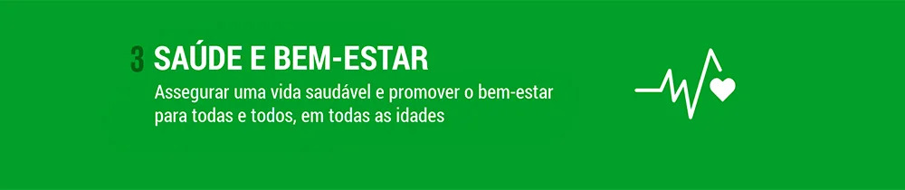
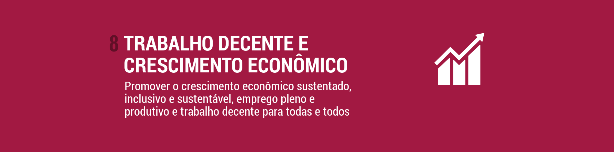

Você sabe o que são as metas da ODS?
Os Objetivos de Desenvolvimento Sustentável são um conjunto de 17 metas estabelecidas pelas Nações Unidas para guiar o mundo
direção a um futuro mais sustentável até 2030. Essas metas abrangem uma ampla gama de desafios, desde a erradicação da
pobreza até a ação climática e a igualdade de gênero.
A Connected By Hunger contribui diretamente com algumas das metas da ODS, como a Fome Zero, Emprego digno e crescimento econômico,
Consumo e produção responsáveis, combate às alterações climáticas e Parcerias em prol das metas.
A CBH está comprometida em combater a fome e garantir o acesso a alimentos adequados, seguros e nutritivos para comunidades carentes. Ao conectar doadores de alimentos a ONGs, a CBH ajuda a reduzir o desperdício e a distribuir alimentos excedentes para aqueles que mais precisam, contribuindo para alcançar a meta de Fome Zero.
Ao fornecer alimentos nutritivos e seguros para as comunidades, a CBH contribui para melhorar a saúde e o bem-estar das pessoas. Isso é especialmente importante para grupos vulneráveis, como crianças, idosos e pessoas em situação de pobreza, que muitas vezes têm dificuldade em obter alimentos adequados.

Também contribuímos com
Geração de Empregos: Ao facilitar a conexão entre doadores de alimentos e ONGs, a CBH impulsiona a demanda por serviços de transporte e logística
para coleta e distribuição de alimentos. Isso cria oportunidades de emprego, principalmente em comunidades locais, ajudando a promover o trabalho decente.
Estímulo à Economia Local: A CBH apoia os produtores locais e fornecedores, incentivando a compra e o uso de alimentos frescos e excedentes em vez de serem desperdiçados.
Isso fortalece a economia local, promovendo a sustentabilidade das cadeias de suprimentos de alimentos e apoiando os agricultores e produtores locais.
A CBH desempenha um papel fundamental na redução do desperdício de alimentos, promovendo ações de produção e consumo sustentáveis. Ao aproveitar alimentos excedentes e próximos do prazo de validade, a empresa evita que esses alimentos sejam descartados, reduzindo assim o impacto ambiental e contribuindo para a meta de Produção e Consumo Sustentáveis.

A CBH contribui para a ação contra a mudança global do clima por meio das seguintes iniciativas:
Redução de Emissões de Gases de Efeito Estufa: Ao evitar o desperdício de alimentos e promover a utilização de alimentos excedentes, a CBH contribui para a
redução das emissões de gases de efeito estufa. Isso ocorre porque a produção, processamento e transporte de alimentos são responsáveis por uma parcela significativa
das emissões globais de gases de efeito estufa.
Conservação de Recursos Naturais: Ao aproveitar alimentos excedentes e evitando que sejam descartados, a CBH ajuda a conservar recursos naturais valiosos,
como água e terra. A redução do desperdício de alimentos também significa reduzir a necessidade de desmatamento, uso intensivo de água e outros impactos
ambientais associados à produção de alimentos.
Sensibilização e Educação Ambiental: A CBH também desempenha um papel importante ao conscientizar a sociedade sobre a importância da redução do desperdício de
alimentos e suas conexões com a mudança climática. Através de campanhas de sensibilização e programas educacionais, a empresa promove ações individuais e coletivas
para enfrentar os desafios da mudança climática.
A CBH estabelece parcerias estratégicas com doadores de alimentos, ONGs, produtores e fornecedores para alcançar seus objetivos. Ao colaborar com diversas partes interessadas, a empresa fortalece a implementação dos ODS, compartilhando conhecimento, recursos e experiências para promover a segurança alimentar e a erradicação da fome.